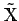
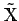

Inhalt Index DeskTop Bronstein

 Funktionalanalysis Metrische Räume Vollständige metrische Räume
Funktionalanalysis Metrische Räume Vollständige metrische Räume


Jeder beliebige, also im allgemeinen nicht vollständige metrische Raum  kann vervollständigt werden; genauer, es existiert ein metrischer Raum  mit folgenden Eigenschaften:
kann vervollständigt werden; genauer, es existiert ein metrischer Raum  mit folgenden Eigenschaften: